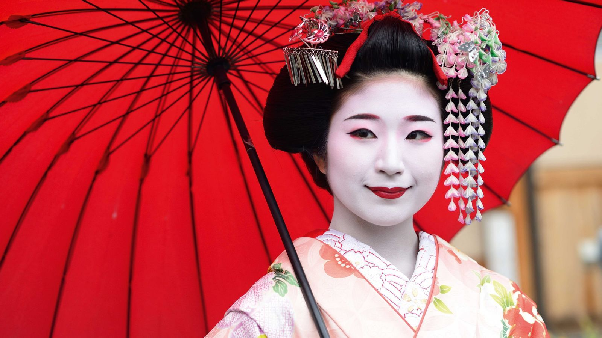

Geisha

Geisha adalah salah satu dari sekian banyaknya budaya Jepang yang cukup terkenal. Terkadang, bagi sebagian orang yang masih awam terhadap Geisha, akan menganggap Geisha sebagai sosok “makhluk misterius” dan menjadi salah satu budaya, sekaligus profesi tradisional Jepang yang kerap disalahartikan.
Dalam bahasa Jepang sendiri, Geisha bermakna “orang seni” atau orang yang memiliki keterampilan dalam seni tradisional Jepang, seperti menari, menyanyi, musik, ataupun upacara minum teh. Dengan kata lain, Geisha adalah aktivis seni penghibur tradisional di negara Jepang.
Memang, awalnya pria lah yang memerankan Geisha ini, tetapi beberapa pria yang menekuni budaya tradisional ini cenderung menurun, hingga akhirnya para wanita yang segera menggantikan peran mereka.
Geisha sudah ada sejak abad 18-an dan 19-an, serta masih sangat terkenal sampai saat ini. Sayangnya, di zaman sekarang, kebudayaan Jepang yang satu ini cenderung menurun meskipun masih ada beberapa di antara orang Jepang yang tetap mempertahankan Geisha.
Adapun sebutan lain untuk Geisha, yakni Maiko dan Geiko. Istilah tersebut mulai ada dan diterapkan di zaman Restorasi Meiji. Istilah Maiko hanya diterapkan di tempat Kyoto, sementara istilah Geiko hanyalah sebutan lain saja. Hal itu karena Maiko lah yang menjadi sebutan untuk Geisha pemula.
Lazimnya, budaya tradisional Jepang ini (geisha) memang sudah diajarkan dan dilatih sejak usia muda. Tak hanya itu, rumah geisha juga rata-rata akan membawa gadis dari keluarga tidak mampu atau miskin untuk menetap dan berlatih di sana. Rumah-rumah Geisha itu disebut Okiya.